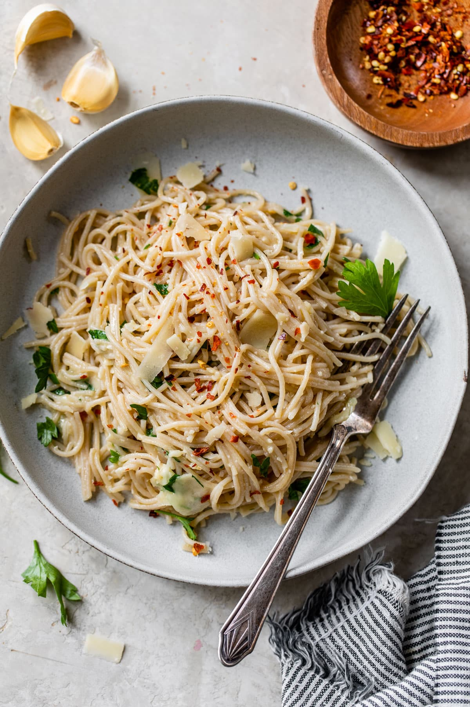

Garlic Pasta

Description
This quick Garlic Pasta with olive oil and Parmesan is a beautiful reminder that an elegant and flavorful dinner
doesn’t have to be complex or time-consuming.
Ingredients
- Pasta
- Olive Oil
- Garlic
- Parmesean
- Parsley
- Red Pepper Flakes
Steps
- Toss peeled garlic cloves with olive oil in a baking dish.
- Roast until garlic is light golden brown.
- Cook pasta, reserving 1 1/2 cups of the pasta cooking liquid.
- Blend the garlic with Parmesan and olive oil.
- Simmer the garlic mixture in a skillet with the reserved pasta water to thicken.
- Toss the drained pasta with remaining cheese and parsley. Serve warm topped with additional Parmesan. ENJOY!